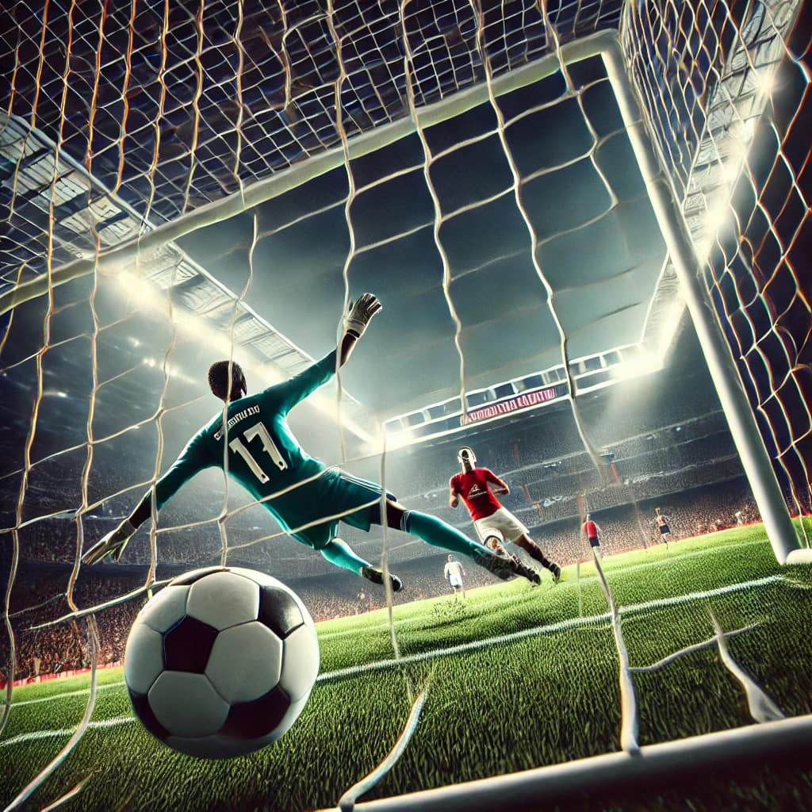

Ước mơ của tôi là trở thành một cầu thủ bóng đá chuyên nghiệp.
Tôi chọn ước mơ này vì niềm đam mê mãnh liệt với bóng đá từ nhỏ. Mỗi lần được ra sân chạm bóng, chạy trên sân, ghi bàn và nghe tiếng mọi người hô vang tên mình, tôi cảm thấy mình thực sự được sống hết mình. Bóng đá không chỉ là một môn thể thao mà còn là cách để mình thể hiện bản thân và chinh phục những thử thách.
